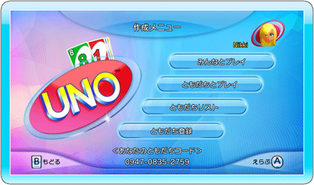
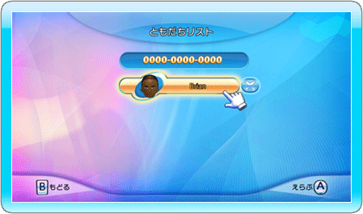

26 |
「作成メニュー」 |
 |
 ・「みんなとプレイ」 このモードでは設定したルールでロビーをつくり、世界中のプレイヤーと対戦することができます。 プレイしたいルールやオプションを選択すると、ゲームロビーが作成されます。あなたが指定したルールでプレイしたい対戦相手が現れるのを 待つか、ともだちを呼ぶこともできます。また、 COMを対戦相手にして、すぐに試合を開始することも可能です。 ・「ともだちとプレイ」 このモードは「ロビーをさがす」に似ていますが、参加できるのがともだちのみに限定されている点で異なります。「ロビーをさがす」同様、自分の 好みに応じたゲームを設定すると、ゲームロビーが作成されます。ともだちが参加するのを待つか、 ともだちを呼ぶことができます。また、COMを対戦 相手に試合を開始することもできます。 ・「ともだちリスト」  ともだちリストとは、あなたがこれまでに ゲーム内で追加してきたともだちの一覧です。 初期のともだちリストは誰も登録されていない 状態となっていますので、「ともだち登録」から ともだちコード を入力する必要があります。 リスト上にはこれまでに追加してきたともだちと、あなたをともだちとして登録してきた人たちのMiiキャラクターが表示されます。 「？」のマークが表示された場合、そのともだちは あなたの ともだちコード を入力していないことを 表し、笑顔のマークが表示されている場合は、そのともだちが現在ゲームを作成している事を表して います。WiiリモコンでMiiをポイントすることで、 その人の ともだちコード が画面下部に表示され、 確認する事ができます。 ともだちの枠の横にある削除ボタンを使って、 そのともだちの登録情報をリストから消すことも できます。 ・「ともだち登録」 「ともだち登録」画面では、画面上に表示された 数字キーを使用して、有効なともだちコードを入力 する必要があります。正確なコードを入力しないと、ともだちをともだちリスト上に登録することができませんので注意してください。 |
 |
 |
 |